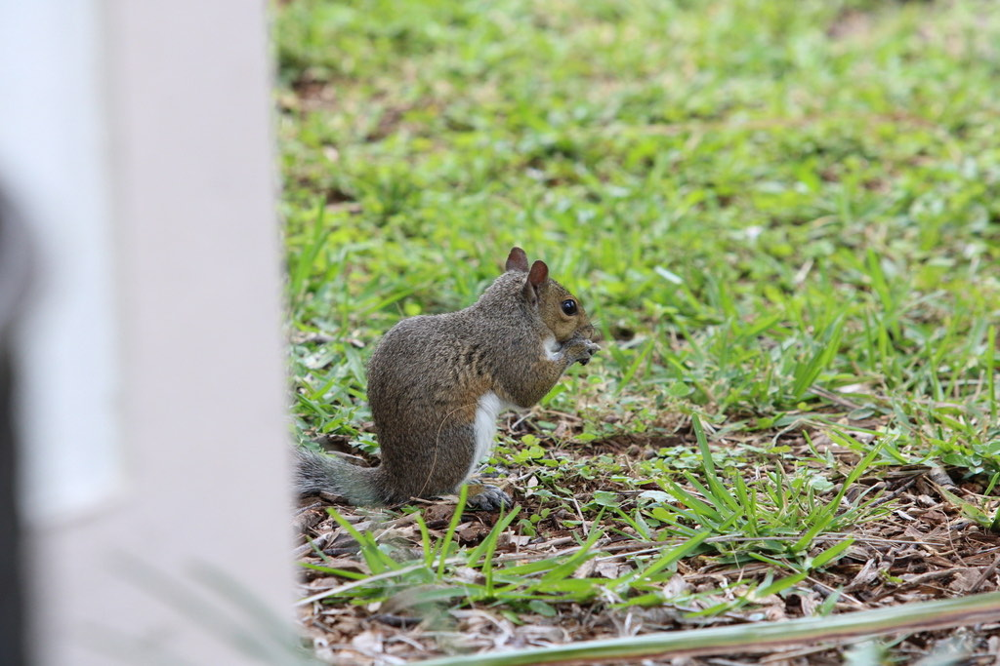

- The eastern gray squirrel is the bushy-tailed acrobat of Florida's oaks — equally at home leaping through the canopy and raiding a bird feeder.
- It is a dedicated scatter-hoarder, burying thousands of nuts one at a time and relying on memory and smell to find them again later.
- It never finds them all — and the nuts it forgets sprout into trees, making the squirrel an accidental but genuine forest planter.
- It can head down a tree trunk face-first, thanks to ankles that rotate almost backward to grip the bark.
Usually gray above with a paler, whitish belly; some individuals are unusually dark or reddish-brown.
Long, broad, and very bushy, often held in a curve over the back.
Clearly larger than a chipmunk, smaller than a cat.
Surprisingly vocal — sharp kuk-kuk barks and chatters, plus a buzzy alarm call given with flicks of the tail to warn others of danger.
A gray, bushy-tailed rodent bounding across the ground or spiraling up an oak. The big, flicking tail and the habit of freezing, then dashing, are dead giveaways.
Mostly acorns, nuts, and seeds, plus buds, flowers, fungi, berries, and the occasional insect or egg. Quick to take advantage of bird feeders and picnic leftovers.
In and under the oaks and other large trees — on the ground foraging, racing up trunks, or leaping between branches. Active throughout the day.
Year-round resident, active in every season and through most of the daylight hours.
Enjoy them, but do not hand-feed. Fed squirrels lose their wariness, can become nippy, and a human diet is not good for them.


- © Cole Guyton (CC-BY-NC), via iNaturalist
- © delphpalma (CC-BY-NC), via iNaturalist
- © Christine Leamon (CC-BY-NC), via iNaturalist
- © Maria Escobar (CC-BY-NC), via iNaturalist